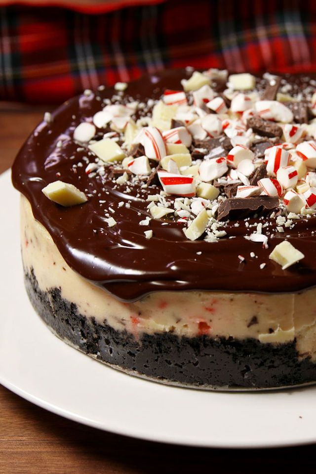

Recipe

Description
Cheesecake with an Oreo crust and ganache topping. Perfect for the Holidays!
Ingredients
- Cooking spray
- 3 (8-oz.) blocks cream cheese, softened
- 1 c. granulated sugar
- 2 large eggs
- 1/4 c. sour cream
- 1 1/2 tbsp. all-purpose flour
- 1 tsp. peppermint extract
- 1 tsp. pure vanilla extract
- 1/4 tsp. kosher salt
- 1/2 c. chopped chocolate, plus more for garnish
- 1/2 c. chopped white chocolate, plus more for garnish
- 1/2 c. chopped candy canes, plus more for garnish
- 24 Peppermint Oreos
- 5 tbsp. melted butter
- 3/4 c. hot heavy cream
- 1 1/2 c. semisweet chocolate chips
Steps
- Preheat oven to 350º and spray an 8" springform pan with cooking spray. Make filling: In a large bowl using a hand mixer (or in a stand mixer using the paddle attachment), beat cream cheese and sugar. Add eggs, one at a time, then sour cream, flour, peppermint extract, vanilla, and salt. Gently fold in chopped chocolates and candy canes and set aside.
- Make crust: In a food processor or in a large Ziploc bag, crush Oreos into fine crumbs. Stir with melted butter until completely moist.
- Add crust to prepared pan and pack tightly.
- Pour over filling and place pan on a rimmed baking sheet. Bake until center is only slightly jiggly, about 1 hour. (If you want to use a water bath to ensure no cracking, wrap springform pan in foil and place springform pan in a deep-sided roasting pan. Pour boiling water into roasting pan until it reaches halfway up the springform pan.)
- Turn off oven and let cheesecake cool in oven 1 hour (this step is optional but prevents cracking).
- Refrigerate cheesecake until completely chilled, at least 4 hours but preferably overnight
- Before serving, make chocolate ganache: Pour hot cream over chocolate chips and let sit, 5 minutes. Stir until all chocolate is melted. (If ganache seems too thin, refrigerate 5 minutes.)
- Spread ganache over chilled cheesecake and garnish with more chopped chocolate and candy canes.
- Refrigerate 10 minutes before serving to let ganache harden.
Go back